원본 · 휴대폰
01
화면 목업
PC·태블릿·휴대폰에서 같은 내용이 각 화면에 맞게 바뀌어요.
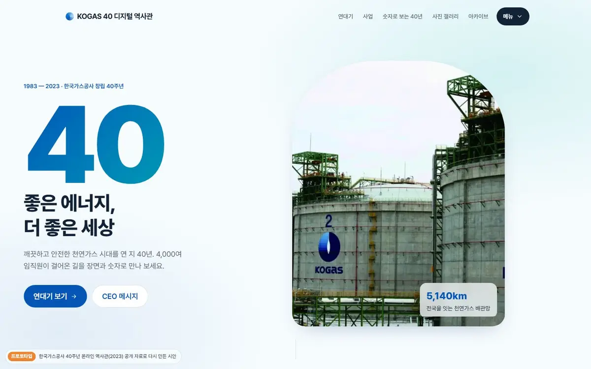
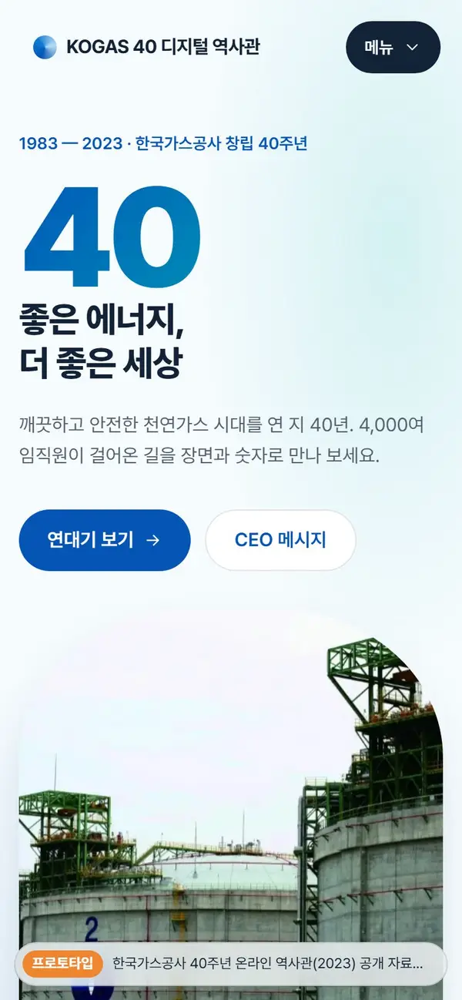
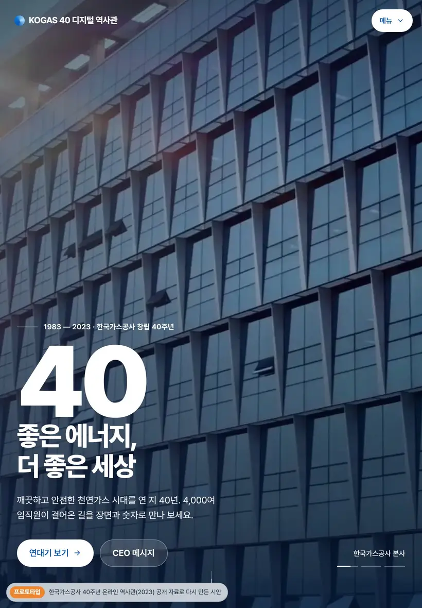
02
원본과 비교
가운데 손잡이를 좌우로 끌어 보세요(키보드 ← → 도 됩니다). 왼쪽이 원본, 오른쪽이 프로토타입이에요.
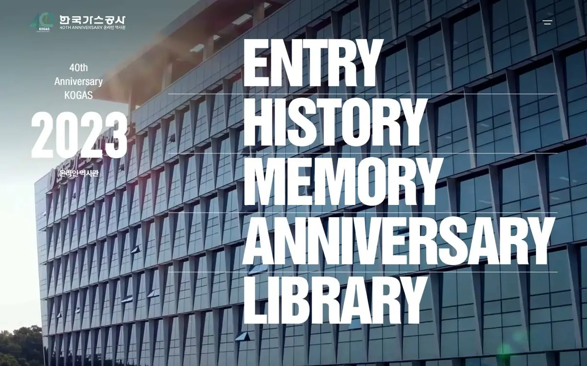
원본 프로토타입프로토타입 · 휴대폰
한 줄로 쌓이고 메뉴는 판으로 열려요
03
무엇을 바꿨나
고객이 좋아한 역사관의 장점(따뜻한 첫 화면, 대문 여는 효과, 메인 스크롤로 나뉜 카테고리, 모바일 고려)을 기준으로 삼았어요.
PHOTO
사진이 주인공
원본의 배경 사진을 화면 가득 쓰고, 글자 쪽만 살짝 어둡게. 본문 바탕은 하늘빛으로 가볍게.
GRANDEUR
사진 띠 + 흐르는 배관
구역 사이를 화면 폭 사진 띠(패럴랙스)로 끊고, 배관 선 안으로 가스가 흘러요.
FIRST VIEW
대문 열고, 사진 세 장
문이 열리면 본사·바다 위 LNG 설비·밤의 탱크가 천천히 당겨지며 교차하고 큰 40이 떠올라요.
STRUCTURE
5메뉴 · 2단계 이내
ENTRY·MEMORY 등 영문 메뉴를 연대기·사업·숫자·갤러리·아카이브로.
MOBILE
휴대폰에서 깨지지 않게
모든 쪽을 다섯 화면 폭에서 검사해 가로 넘침 0.
SPEED
영상은 누를 때만
유튜브 10편을 미리보기 그림으로 두고 누를 때만 불러와 첫 화면이 빨라요.
04
페이지별 구성
메인과 다섯 메뉴, 모두 6쪽. 쪽마다 들어간 내용과 움직임이에요.
PAGE 01 · index.html
메인
- 문이 열리며 사진 세 장이 천천히 교차하는 첫 화면(설명·진행 막대)
- 40년을 네 숫자로(굴러 오르는 숫자)
- '세계 최대 규모의 천연가스 인프라' 화면 폭 사진 띠
- 다섯 전시실 카드, CEO 메시지·비전 영상
대문 열림사진 교차사진 띠숫자 굴리기가벼운 유튜브

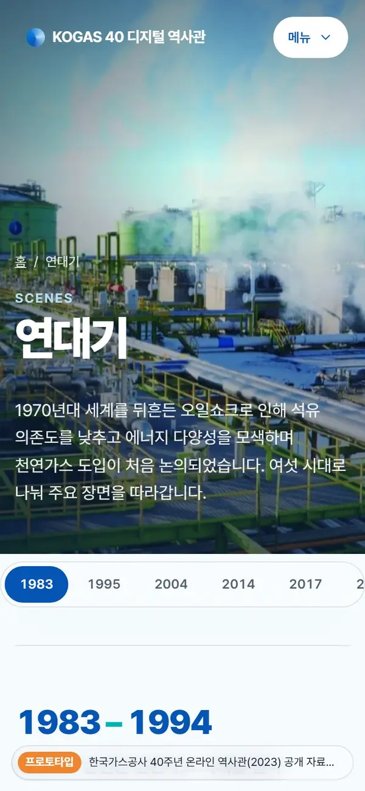
PAGE 02 · history.html
연대기 SCENES
- 원본 배경 사진을 쓴 사진 머리(열리며 등장, 패럴랙스)
- 여섯 시대, 218개 장면을 시대별로
- 붙어 따라오는 시대 바로가기(지금 시대 표시)
- 왼쪽 연도·시대 영상은 붙어 있고 오른쪽 사건이 흐름
- 사진 있는 사건은 카드로 크게
시대 추적붙는 머리하나씩 떠오르기
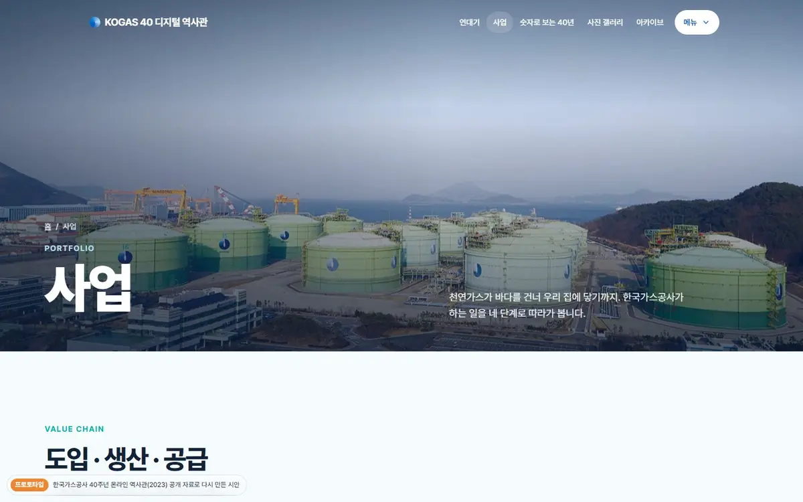
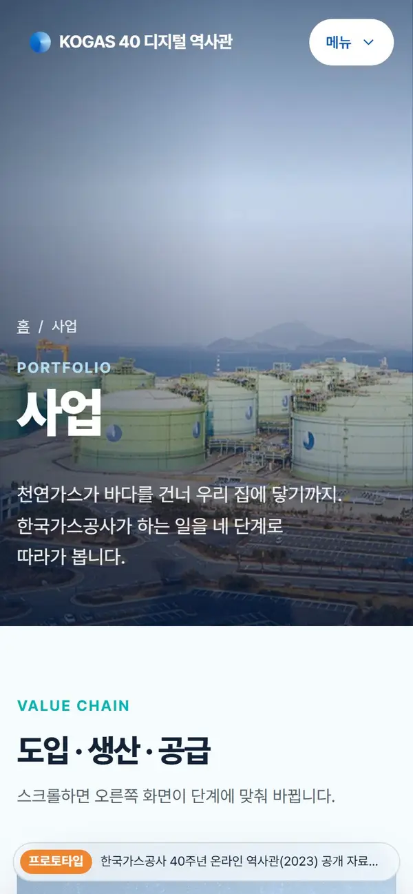
PAGE 03 · business.html
사업 PORTFOLIO
- 도입·생산·공급·미래 네 단계 스크롤 스토리텔링
- 글을 읽으면 오른쪽 사진이 단계에 맞춰 바뀜
- 40주년 웹툰 4편(원본 연결)
스크롤 스토리텔링흐르는 배관
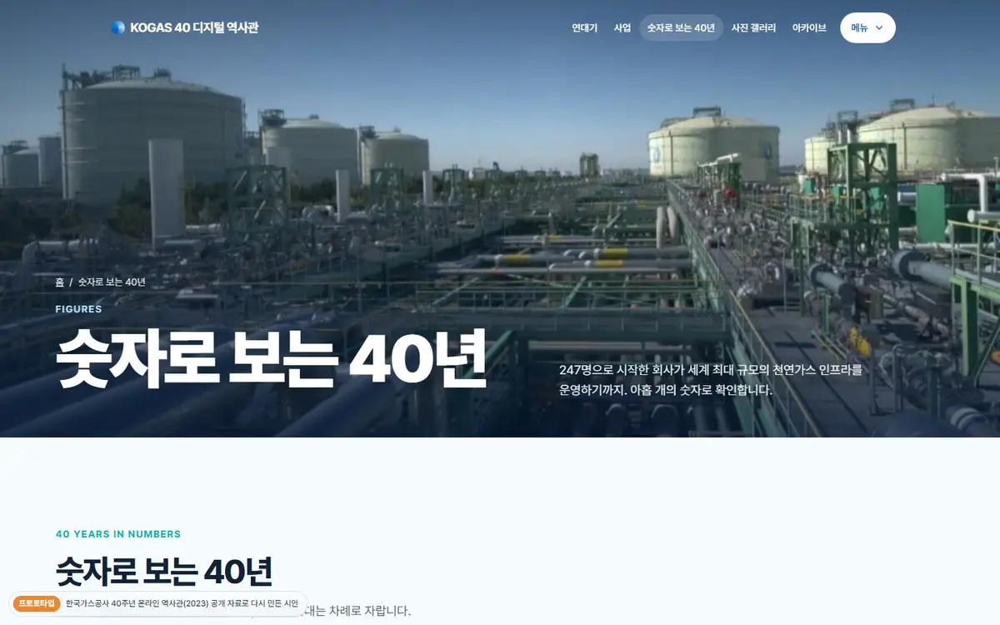
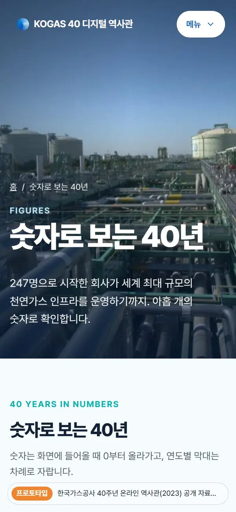
PAGE 04 · figures.html
숫자 FIGURES
- 원본 인포그래픽의 아홉 지표를 카드로
- 최종 숫자는 굴러 오르고 연도별 막대는 차례로 자람
- 가장 큰 지표(배관망)는 파란 강조 카드
막대 자라기숫자 굴리기
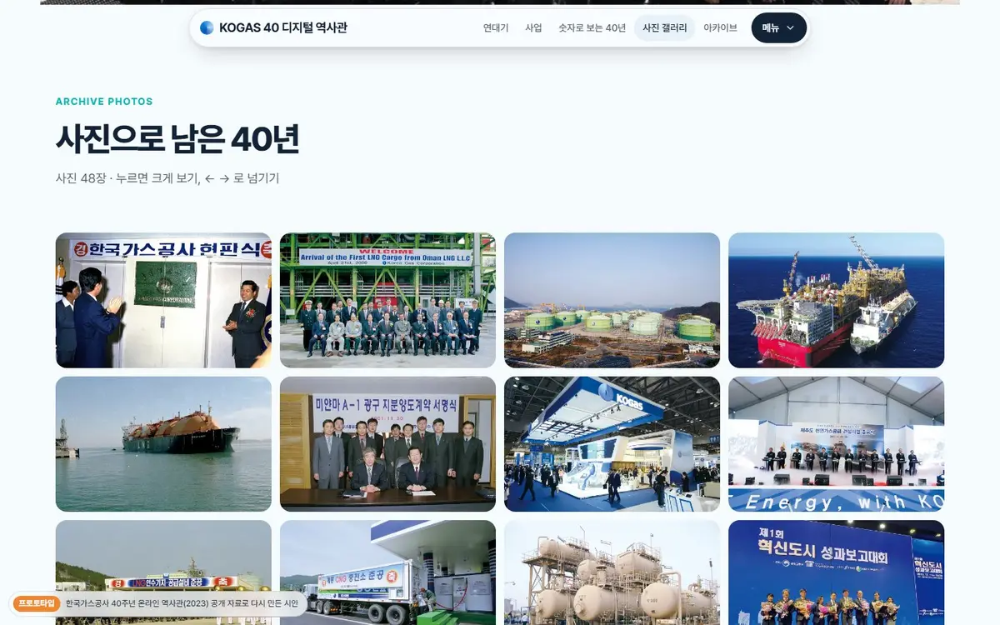
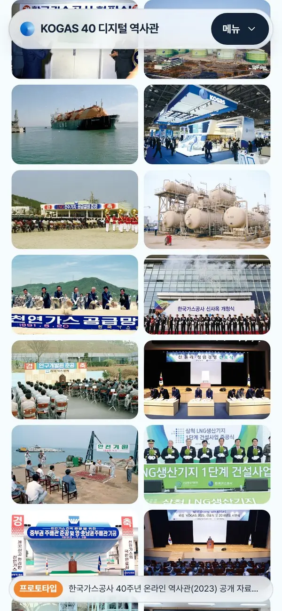
PAGE 05 · gallery.html
갤러리 GALLERY
- 사료 사진 48장을 벽돌처럼 쌓은 갤러리
- 누르면 크게 보기, 방향키·밀기로 넘기기, 번호 표시
크게 보기밀어서 넘기기
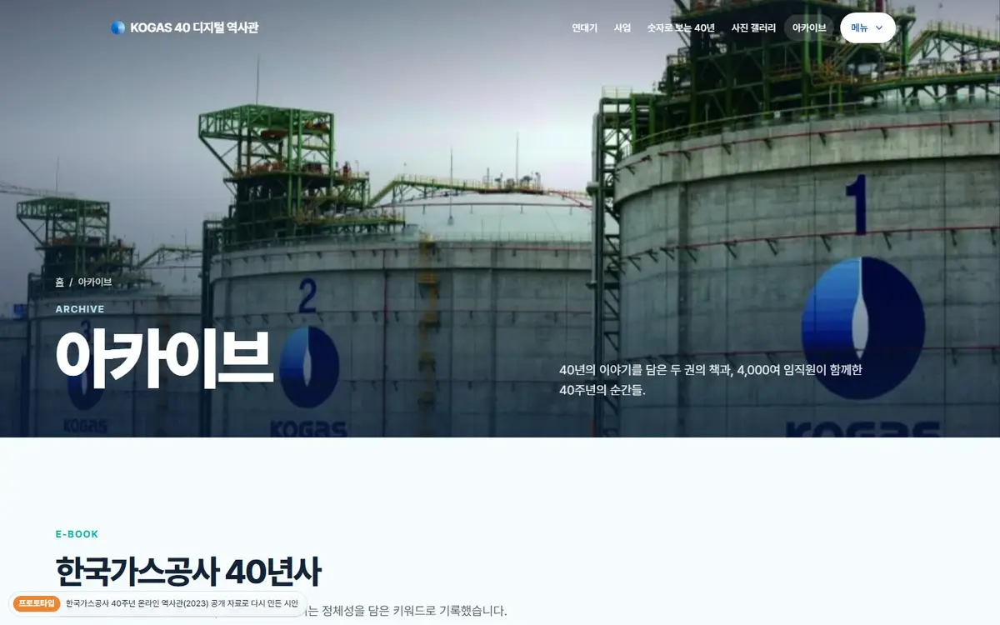
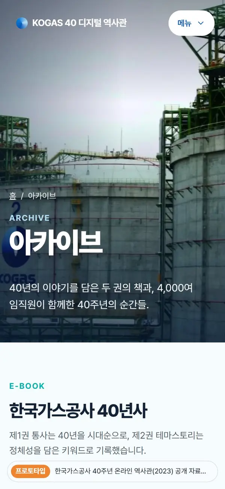
PAGE 06 · archive.html
아카이브 ARCHIVE
- 40년사 e-book 2권(원본 e-book 연결)
- 기울어지는 책 표지
- 40주년 축하 인터뷰·기념식 영상
기울기 카드가벼운 유튜브
05
디자인 · UI 구현 기술
보람찬크루 공통 컨벤션 그대로. 요즘 UI 데모의 부품을 가져와 팔레트만 바꿔 다시 썼어요.
- 구조
- 정적 HTML 6쪽. 원본 사이트에서 모은 자료(JSON)로 Node 스크립트가 쪽을 조립해요. 서버 프로그램이 필요 없어 고객 서버 어디에나 올릴 수 있어요.
- CSS
- @layer 7단계, BEM 이름, 블록 하나 = 파일 하나(부품 20개). 색은 --kg-* 토큰만 쓰고, 요즘 UI 부품은 --tr-* 별칭으로 같은 팔레트를 입혔어요. clip-path 대문·사진 머리, 사진 교차·켄 번스(CSS 애니메이션만), 패럴랙스 사진 띠, stroke-dashoffset 배관, CSS columns 갤러리, @starting-style 팝업.
- JS 모듈
- 프레임워크 없이 ES 모듈 13개를 data-module·data-effect로 연결: bar-chart glider lightbox site-nav story-steps yt-bg yt-lite count-up gate-snap pin-progress reveal scroll-progress tilt
- 사진·영상
- 원본 사진 106장을 WebP로 줄여 합계 8.7MB(한 장 200KB 이하). 모든 그림에 width·height, 화면 밖은 lazy. 유튜브는 누를 때만 불러오는 가벼운 방식(쿠키 줄인 주소).
- 반응형
- 휴대폰 우선. 360·390·820·1024·1280px에서 가로 넘침 0. 휴대폰은 메뉴를 판(popover)으로, 연대기 왼쪽 머리는 붙지 않게, 스토리텔링은 화면을 위에.
- 성능
- 움직임은 transform·opacity 위주, 스크롤·포인터 처리는 프레임당 한 번(rAF). 실제 브라우저에서 프레임을 재서 긴 프레임 0을 목표로 검수.
- 접근성
- 키보드만으로 모든 메뉴·크게 보기·영상 사용, 동작 줄이기 설정이면 움직임 제거, 그림 대체 글, 본문 바로가기.
- 검색 제외
- noindex, nofollow, noimageindex 메타, 바깥 링크는 rel="nofollow". 모든 쪽 왼쪽 아래에 "프로토타입" 표시.